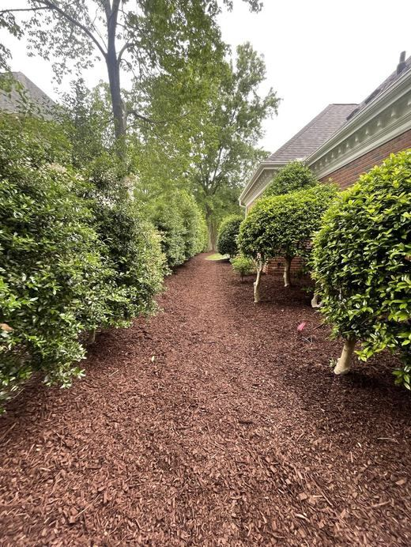
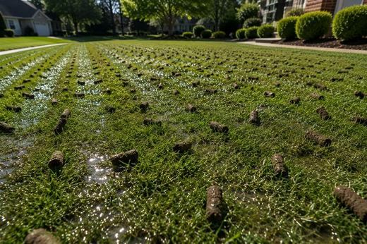
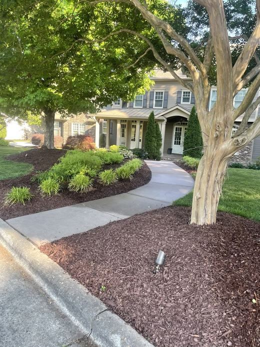

Landscaping & Landscape Design
From a fresh layer of pine straw to a complete new landscape, we make the whole property look finished.
Done right, every time
Good landscaping is what makes a house look cared for. We can start with a design and mockup so you see the plan before anything goes in the ground, then build it: new beds, the right plants for our clay and heat, clean edging and a fresh layer of mulch or pine straw.
We also take care of the landscape you already have. That means cleaning out and weeding beds, trimming shrubs and hedges back into shape, and clearing out ivy and overgrowth so you can reclaim your yard.
Landscaping services
Landscape Design & Mockups
See your new landscape before anything goes in the ground, with a design and mockup of your yard.
Mulch & Pine Straw
Fresh hardwood mulch or pine straw spread at the right depth for a clean, finished look.
Bed Cleanup & Weed Control
Flower beds cleaned out, deweeded and kept under control.
New Beds & Bed Removal
New landscape beds built from scratch, or old, overgrown beds taken out and cleaned up.
Bush, Shrub & Hedge Trimming
Bushes, shrubs and hedges trimmed into clean, healthy shapes.
Tree, Shrub & Flower Planting
The right plants in the right spots, planted properly so they establish and thrive.
Privacy Tree Installation
Rows of evergreen privacy trees to screen out neighbors, roads and views.
River Rock & Decorative Stone
River rock and decorative stone for beds, borders and low-maintenance areas.
Landscape Edging
Metal or natural edges that keep beds crisp and mulch where it belongs.
Ivy & Overgrowth Removal
Ivy, vines and overgrown areas cleared out so you can use your yard again.
Grading & Leveling
Uneven ground graded and leveled, and water directed away from your home.
Landscaping for Carolina clay
Triangle red clay holds water in winter and bakes hard in summer, so plant choice and bed prep matter. We build beds up with good soil, pick plants that handle our heat and humidity, and finish with mulch or pine straw to hold in moisture.
Pine straw is a Carolina classic. It stays put on slopes and suits the azaleas, camellias and hollies common in Triangle yards. Hardwood mulch gives a darker, more formal look. Either way, about 2 to 3 inches is plenty, kept off tree trunks and siding.

Getting started is easy
01Free Estimate
Call, text or request a quote online. We look at your property, talk through what you want and give you a clear, upfront price.
02Scheduling
Pick a date for your project, or set up weekly or bi-weekly service for ongoing care.
03The Work
Our crew handles it start to finish, done right for Triangle clay and weather.
04Clean Up & Enjoy
We clean up, haul away the debris and leave the property looking sharp.
Google Reviews
Top-rated by our neighbors
Every one of our Google reviews is five stars. See what Triangle homeowners say about working with us.
Carolina Premier Lawn & Tree does a great job. They mow, edge and blow our yard, trim the hedges. All their work is done professionally and timely. They are dependable and communicate with us if there's a change in their schedule and they are delayed. I highly recommend Jerry and his crew for all your landscape needs.
Jerry and his crew did an amazing job mulching my already mature gardens. He was quick to respond when I requested a quote; quoted a great price, in my mind, and was prompt and considerate. I will definitely be using Carolina Premier again. Thank you!
Highly recommend Carolina Premier Lawn and Tree Services. They are reliable, affordable, and always responsive. They show up when they say they will, communicate well, and consistently do quality work.
Landscaping FAQ
Is mulch or pine straw better?
Both work well. Pine straw is lighter, stays put on slopes and is popular in the Carolinas. Hardwood mulch looks darker and more formal and adds organic matter as it breaks down. Many homeowners choose based on the look they like.
Can I see a design before you start?
Yes. We offer landscape design and mockups so you can see the plan and make changes before any work begins.
What are the best privacy trees for the Triangle?
Popular choices include Green Giant arborvitae, Nellie R. Stevens holly and cryptomeria. The best pick depends on how much sun and space you have and how quickly you need coverage.
Landscaping near you
Pick your town to see our Landscaping services there.
Other ways we can help

Lawn Care & Maintenance
Mowing, edging, aeration, overseeding, sod, lawn repair and seasonal cleanups.
Learn more →
Sod Installation
New sod laid on properly prepared soil for an instant, thick lawn.
Learn more →
Mulch & Pine Straw
Fresh hardwood mulch or pine straw, clean bed edges and weeding for a finished look.
Learn more →Helpful guides

Fall Lawn Care Guide for Apex & the Triangle
Fall is the most important season for tall fescue lawns. Here is what to do and when.
Read the guide →
Mulch vs. Pine Straw: Which Is Better?
Both are great choices for Carolina landscapes. Here is how to pick.
Read the guide →
When to Trim Trees in North Carolina
Timing matters for healthy trees. Safety problems should never wait.
Read the guide →Ready for a better-looking yard?
Free estimates across Apex and the Triangle. Call or text today.